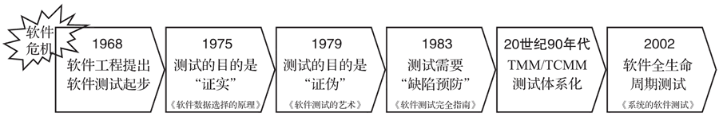
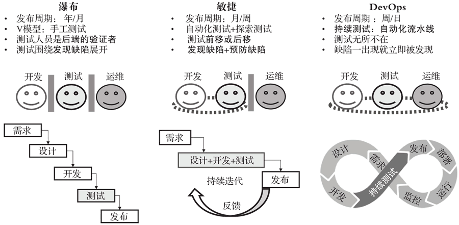

首页 > 编程笔记
软件测试介绍（非常详细）
软件测试在中国是一个比较年轻的行业，但发展却十分迅速，测试技术层出不穷，测试工程师数量与日俱增。测试人员在开发项目中扮演着重要的角色。
但很多测试工程师在工作两三年后就会发现，似乎该掌握的业务知识已经掌握了，该熟悉的测试技术也已经熟悉了，就是不知道该如何进一步深入，工作变得缺乏挑战和成就感。我们姑且称这种情况为“三年之痒”。
本来在职业发展的过程中，遇到瓶颈是一件很正常的事，但测试工程师在遇到瓶颈后似乎更难突破。
各种测试群、技术论坛和博客上不乏“测试无技术”“测试无前途”的论调，测试似乎成了一个没有发展方向和前途的行业。如果一直无法打破，只能靠惯性前行，“痒”就变成了“坎”。很多优秀的测试人员在这个时候选择了离开。
这是一个很奇怪的现象：一方面是测试的队伍迅速壮大，高歌猛进；另一方面在测试面前又似乎横亘着一个迈不过去的坎。我想这背后有一个重要原因，就是测试技术在中国的发展过于迅速，反而导致从事测试工作的人们对测试的理解存在偏差，即使是测试工程师，对测试的优势和劣势的认识也不足。测试工程师在遇到职业发展瓶颈后很难取得有效突破。
随着软件行业的发展，混乱无序的软件开发过程已经不能适应软件功能日益复杂的现状，“软件危机”爆发。1968 年秋季，北约召集了近 50 名一流的编程人员、计算机科学家和工业界巨头，讨论和制定摆脱软件危机的对策。在那次会议上提出了“软件工程”的理念。随着软件工程的发展，软件测试也开始逐步发展起来。
下图总结了软件测试发展进程：
1975 年，两位软件测试先驱 John Good Enough 和 Susan Cerhart 在 IEEE 上发表了《软件数据选择的原理》一文，将软件测试确定为一种研究方向。此时软件测试普遍被定义为“证明软件工作正确的活动”，这个理念被简称为“证实”。
1979 年，Glenford J.Myers 撰写的《软件测试的艺术》一书出版（该书到现在已经出版到第3版，依然被大多数软件测试人员奉为经典）。该书结合测试心理学，对测试重新进行了定义，认为测试是为了“发现错误而进行的活动”，这个理念又被称为“证伪”。“证实”和“证伪”至今依然是软件测试领域重要的理念，对测试工程师有着深远的影响。
1983 年，另一本软件测试的重量级著作《软件测试完全指南》（由Bill Hetzel撰写）横空出世。这本书指出：“测试是以评价一个程序或者系统属性为目标的任何活动，测试是对软件质量的度量。”至此，人们开始意识到，软件测试不应该仅在事后用来证明软件是对的或是不对的，而应该走向前端，进行缺陷预防。
20 世纪 90 年代，软件测试开始迅猛发展。自动化测试技术开始盛行，软件测试开始向体系化发展，测试成熟度模型（TMM）、测试能力成熟度模型（TCMM）等开始出现。软件测试体系日益成熟、完善。
2002 年，Rick 和 Stefan 在《系统的软件测试》一书中对软件测试做了进一步定义：“测试是为了度量和提高被测软件的质量，对测试软件进行工程设计、实施和维护的整个生命周期过程。”这进一步丰富了软件测试的内容，扩展了软件测试的外延，测试进入“全生命周期测试”时代。
敏捷开发模式对测试产生了深远的影响。
在瀑布开发模式下，很多公司都有独立的测试部门，到了测试阶段，开发人员会把集成了所有功能的版本一股脑儿提交给测试人员来测试。当然提交过程也不会那么顺利，开发人员把提交版本给测试人员，测试人员测试不通过，会把版本再次退给开发人员，来来回回“拉锯”好几轮，测试人员才能正式开始测试。
那时普遍认为测试人员要对产品质量负责，好质量是测出来的，所以开发人员调通基本功能后，就会等着测试发现缺陷，通过缺陷来驱动代码的优化和重构。
到了发布的时候，测试人员对“产品是否可以发布”有一票否决权，测试人员和开发人员经常为了缺陷的处理方式争吵，彼此就像隔着一道墙。
而敏捷开发模式推翻了这道墙。
Lisa Crispin 和 Janet Gregory 在《敏捷软件测试：测试人员与敏捷团队的实践指南》一书中是这样定义敏捷测试人员的：专业的测试人员，适应变化，与技术人员和业务人员展开良好协作，并理解利用测试记录需求和驱动开发的思想。他们具有优秀的技术能力，知道如何与他人合作以实现自动化测试，同时也擅长探索式测试。他们还希望了解用户在做什么，以更好地理解用户的软件需求。
在敏捷开发模式里，质量也不再是测试的事情，每个角色都要为自己那部分质量负责，每个开发人员都要自己去测试来确保自己的提交不会破坏系统，自己想办法去优化重构。开发人员和测试人员的关系，也从对立变成了合作，进而融合，测试、开发人员的比例从 1∶2 降到了 1∶10，有些团队甚至不再设置专职测试工程师。
在瀑布开发模式下，产品发布周期通常是“大几个月”或是“年”，而敏捷开发模式要求“几周”就要发一个版本，这种增量式、小步快跑的版本发布节奏，让自动化测试变得非常重要，甚至成了影响敏捷开发模式成败的几个关键因素之一。
如果说敏捷开发模式推翻了开发和测试之间的墙，那么 DevOps（开发即运维）又进一步打通了开发、测试和运维环节，通过持续集成（CI）、持续交付（CD）的自动化流水线，再次缩短了产品发布周期，可以做到每日发布或者每日多次发布。
在 DevOps 开发模式下，自动化测试也进一步发展为持续测试，这使得缺陷在产生的时候就会立即被发现。测试也从瀑布开发模式下的后端验证，发展为全流程下无所不在的测试，如图 2 所示。
敏捷开发模式聚焦为用户创造价值（Lean），希望践行者们具有如下价值观（Scrum）：承诺、专注、开放、尊重和勇气。
这使得敏捷团队中的测试人员，只要有想法、有能力就可做任何有利于用户或团队的事情，而不用担心测试的身份：
这并非不务正业，测试本身就是一个需要系统思维和判断力的行业，局限在后端是做不好测试的。敏捷开发模式帮助测试人员打破了限制测试视野和发展的约束，但也给测试人员带来了新的问题和挑战。
这个观点就像在测试行业投下了一颗重磅炸弹，使得那些因敏捷测试转变带来的迷茫迅速迸发出来，引起了大家的广泛讨论：
敏捷开发模式希望测试人员对业务能有非常深入的了解，可以聚焦并创造价值，尽管很多瀑布开发模式下的测试人员也对业务有所了解，但是在深度上还远远不能达到敏捷开发模式的要求。
敏捷开发模式希望测试人员对产品设计能够有深入的理解，要求测试人员可以阅读代码，能进行单元测试或者接口测试，对于很多瀑布开发模式下的测试人员来说这些能力根本不用关心。
敏捷开发模式比瀑布开发模式更加依赖工具和自动化，其要求测试人员可以进行规模化的自动化测试，这对很多瀑布开发模式下的测试人员来说都是短板。
对于瀑布开发模式下测试人员积累的那些经验，敏捷开发模式的管理者希望测试人员可以将其“赋能”给团队其他角色。
测试独特价值的消失和敏捷开发模式下新的要求，应该是这场“测试无用论”危机出现的根源吧。
与此同时，每个团队中多多少少都会有一些没有人干的杂事，很多敏捷团队都希望测试人员可以承担这部分工作。我们常常看到敏捷开发模式中的测试人员同时操心着项目经理、研发经理、产品经理、运维经理等的工作，以一种“全能”的姿态出现，好像什么都在管，又好像什么都管不了。
敏捷开发对测试人员来说是一场解放运动，需要测试人员在思维和能力方面做出相应的改变。项目、产品、研发、运维，每一项都有其自身的专业性，如果测试人员仅凭敏捷的旗号，却不去学习和理解这些领域的内容，不去思考测试视角在这些领域能够起到哪些作用，就去涉足相关工作，那确实就是“打杂”了，这对测试人员本身和团队来说都是损失。
于是软件测试成了很多初出茅庐的同学“退而求其次”的选择：
因为工作原因，我几乎每年都会去做校园招聘，我发现这些年主动投测试岗位的同学，包括那些名校，几乎清一色都是女生。面试时问同学们为什么要选择测试，几乎所有同学的答案里都有“我细心”“我性格好”“我能够做好重复性的工作”这些元素。
也有一些公司对校园招聘采取统一“分配”岗位的政策，那些被分到测试岗的同学，常常会十分沮丧，有的还会为此毁约。
还有很多新生测试力量会通过“测试培训机构”来加入软件测试行业，他们里面很多人都是因为专业不对口或者是学历问题才做此选择的，其中不少人将软件测试作为过渡，先入IT行业，再转别的岗位。
我们很少看到新生测试力量是因为了解测试、喜欢测试或希望成为优秀的测试人员才选择测试工作的。这必然会对中国的软件测试行业造成不利的影响。
“重开发，轻测试”在软件行业中依然比较普遍。这是因为还是有很多管理者根深蒂固地认为：“只有开发才能创造价值，测试不仅不能创造价值，还是一种开销。”当开发和测试被放在一起评价时，管理者会认为开发的贡献更大。
还有很多管理者虽然会认为“好质量是测试出来的，测试的价值就是找缺陷，缺陷发现得越多产品质量就越高”，但在实际项目中，“测试进入时间晚”“留给测试人员进行分析和准备的时间少”“测试资源不足”等情况比比皆是，使得测试效果远远达不到管理者的预期，给管理者留下测试能力水平有问题的偏见。
在敏捷开发模式下的实例化需求、开发者测试、自动化测试、重构、持续集成等实践可有效预防缺陷，提升代码内建质量，降低测试开发比，但也会进一步强化一些管理者对测试人员的偏见，那些管理者会认为“没有测试，项目不也好好的”、“测试的价值确实不明显”、“测试人员的能力水平确实不行”等。我曾和一位管理者聊 DevOps 转型的事情，他的观点是“DevOps转型就是从取消测试开始”。
类似这样的不合时宜的要求还有很多，压得测试人员喘不过气来。
但是现实中，测试“深入难”的特点往往被忽视，“入门容易，门槛低”的特点却被放大——“门槛低”的另一层意思就是“技术含量不高，谁都能做”，这使得在软件行业中测试外包非常普遍。
托马斯·弗里德曼在其名著《世界是平的》一书中将外包归为21世纪铲平世界的十大动力之一。站在企业运营的角度来说，外包的好处是显而易见的，可以让企业更加关注核心业务，建立弹性的人力资源体系。
测试外包有助于企业聚焦核心业务，但这暗示着很多公司并没有将测试作为核心去建设和发展。对正式员工而言，这也意味着企业可能会削弱在软件测试方面的投入，减少对测试员工的培训，没有考虑其职业发展。
对测试外包人员来说，频繁地更换测试产品，导致其无法了解产品核心设计，缺乏归属感，容易一直处于一种低水平的测试状态，自身能力难于提升和进一步发展。这对软件测试行业的整体发展来说势必造成负面影响。
对那些工作了两三年的测试工程师来说，他们对产品和测试技术都有了基本的认识，足以胜任日常工作，他们很自然会开始寻找新的发展方向和目标。
一个发展方向是软件测试管理。但即便在瀑布开发模式下，软件测试的管理岗也不多，更别提在敏捷开发模式下测试和开发不断融合、测试开发比不断降低的情况下，管理岗位就更少了。所以测试工程师要想在测试管理方面有所发展，不仅需要能力，还需要机遇。
当测试工程师进入测试职业发展的平台期时，就会变得迷茫、困惑，看不清自己未来的发展方向，需要指引，但又得不到帮助，这会是一件非常痛苦的事情。我的一位同事曾经拿“布朗运动”来形容他自己在平台期的状态和感觉，我觉得这个比喻非常贴切。正如《奥德赛》中描述的一样，还有什么比徘徊不前更让人感到难受的呢？
职业发展遇到瓶颈本来也很正常，但是如果总是得不到改善，就是致命的。在我身边，有很多测试 3 年左右的同事离职或者转岗。《中国软件测试从业人员调查报告》也指出，中国软件测试行业有超过 7 成的从业者的工作年限是 0~3 年，只有 18% 的人是 3~5 年。需要注意的是，这个比值从2009年开始就没有发生过变化，这说明中国软件测试人员在工作经验的分布上并不合理，缺乏持续性。
我们正在丢失工作 3 年左右最有潜质的那些测试人员，如果这种情况一直持续下去，很难说中国的软件测试行业会不会出现“青黄不接”的情况。
所以我想，对中国的软件测试行业来说，先进的测试技术、深入的产品知识、完美的测试流程，可能都不是最重要的，最重要的是能帮他们直面问题，能拿出具体发展的办法，在测试工程师“三年之痒”的时候，为他们答疑解惑，帮助他们向更高的目标迈进。
尽管 Savoia 提出了耸人听闻的“测试已死”的论调，但 Savoia 也在演讲的后面提及：“真正死去的，是那些传统模式下重复的、低效的、堆人的测试，取而代之的是那些更加专业的测试，这些测试不仅不会死，还会成为抢手资源。”
那些烦琐的接口测试，基本的功能验证，都可以用自动化测试来完成。即便是自动化脚本，测试人员也没有必要每一个都去亲力亲为。测试人员可以做好自动化测试策略，搭建好自动化测试框架，和开发人员沟通好测试目标并一起构建好自动化测试分层，这样就建立了自动化的质量防护网。这样测试人员就有更多的精力去做专业性更强、更有价值的测试，比如：
很难想象具备这些能力的测试人员在团队里会不火。
和开发相比，测试更具有系统和全局的视角。这和工作场景息息相关。瀑布开发模式下，系统被细分为足够小的模块，然后由开发人员实现，这种割裂式的工作模式让开发容易陷入“只见树木不见森林”的状态。即便是敏捷开发模式下，我们可以使用“用户故事地图”等满足可视化需求，让团队可以看到需求全貌，但是工作内容还会导致开发人员容易陷入实现细节中。
现实中，无论是瀑布开发模式还是敏捷开发模式，不知道用户会如何用这些功能的，不知道为什么要做这些功能的开发工程师比比皆是。
相比而言，测试人员比开发人员更具有“大局观”。测试人员不容易陷入实现细节中，更关注用户的使用，关注用户显性和隐性的需求，更具备全局性系统思考的条件。遇到问题后，测试人员比开发人员更容易跳出局部，看到问题的根本原因，从而更有效地解决问题。这种能力在 VUCA 时代变得更加重要。
VUCA 时代具有的混沌不定性，导致即便是用户提的需求，可能用户自己也没有完全想明白，对于同一个功能不同的用户可能会有截然相反的意见。这使得在产品开发中很多设计都没有标准答案，“测试预言”（判断测试是否通过的标准）往往成了解决问题的关键。
一个专业的测试人员可以基于“对行业的理解”、“对用户行为的剖析”、“对使用场景的分析”和“对友商和竞争对手的了解”等对测试是否通过做出判断，其就像一位优秀的法官，可以明辨是非。正因为如此，很多企业会让测试人员去做产品研发的接口人，和一线售前人员一起做方案、和用户沟通、处理售后问题等，这看起来虽然有点“不务正业”，但是从企业经营的角度来说，是帮组织解决了大问题，这些工作更容易被管理者看到，进而获得新的发展机会。
敏捷开发模式的开放性使得团队中的测试人员只要有想法、有能力，就可以做任何有利于用户或团队的事情，而不用担心测试的身份。这使得测试人员有机会“轮岗”，了解别的职位，找到更适合自己的发展方向。
除此之外，测试人员对产品和系统理解的“宽度”，也为测试人员转行奠定了良好的基础：一名测试工程师如果想转行，那么他无论转行做售前、售后、销售、产品、支持等，做测试时打下的那些对产品功能全面深入理解的基础，都可以帮助他快速上手，在新的领域赢得认可。这也让测试人员在VUCA时代更具有竞争力——能够有更多的选择适应变化，这本身就是一种能力。
在瀑布开发模式横行的时代，我们希望测试人员是质量守护者，是产品质量的最后一道防线，尽管组织对测试人员寄予厚望，但结果往往不能令人满意。敏捷开发模式下，那个“守护者”慢慢死掉了，涅槃重生的是更加专业的测试人员，他们是具有更多综合能力的测试人员，具有更强的适应性，可以有更多选择。他们把测试的独特视角带入各个岗位角色中，在跨界中碰撞出新的火花，赢得认可和尊重，成为产品的赋能者。
但很多测试工程师在工作两三年后就会发现，似乎该掌握的业务知识已经掌握了，该熟悉的测试技术也已经熟悉了，就是不知道该如何进一步深入，工作变得缺乏挑战和成就感。我们姑且称这种情况为“三年之痒”。
本来在职业发展的过程中，遇到瓶颈是一件很正常的事，但测试工程师在遇到瓶颈后似乎更难突破。
各种测试群、技术论坛和博客上不乏“测试无技术”“测试无前途”的论调，测试似乎成了一个没有发展方向和前途的行业。如果一直无法打破，只能靠惯性前行，“痒”就变成了“坎”。很多优秀的测试人员在这个时候选择了离开。
这是一个很奇怪的现象：一方面是测试的队伍迅速壮大，高歌猛进；另一方面在测试面前又似乎横亘着一个迈不过去的坎。我想这背后有一个重要原因，就是测试技术在中国的发展过于迅速，反而导致从事测试工作的人们对测试的理解存在偏差，即使是测试工程师，对测试的优势和劣势的认识也不足。测试工程师在遇到职业发展瓶颈后很难取得有效突破。
软件测试发展简史
其实软件开发出现时就有软件测试了。不过最初的软件测试一般是由开发人员自己完成的，投入极少，那时的测试叫“调试”更为恰当，还称不上真正的软件测试。随着软件行业的发展，混乱无序的软件开发过程已经不能适应软件功能日益复杂的现状，“软件危机”爆发。1968 年秋季，北约召集了近 50 名一流的编程人员、计算机科学家和工业界巨头，讨论和制定摆脱软件危机的对策。在那次会议上提出了“软件工程”的理念。随着软件工程的发展，软件测试也开始逐步发展起来。
下图总结了软件测试发展进程：

图 1 软件测试简史
图 1 软件测试简史
1975 年，两位软件测试先驱 John Good Enough 和 Susan Cerhart 在 IEEE 上发表了《软件数据选择的原理》一文，将软件测试确定为一种研究方向。此时软件测试普遍被定义为“证明软件工作正确的活动”，这个理念被简称为“证实”。
1979 年，Glenford J.Myers 撰写的《软件测试的艺术》一书出版（该书到现在已经出版到第3版，依然被大多数软件测试人员奉为经典）。该书结合测试心理学，对测试重新进行了定义，认为测试是为了“发现错误而进行的活动”，这个理念又被称为“证伪”。“证实”和“证伪”至今依然是软件测试领域重要的理念，对测试工程师有着深远的影响。
1983 年，另一本软件测试的重量级著作《软件测试完全指南》（由Bill Hetzel撰写）横空出世。这本书指出：“测试是以评价一个程序或者系统属性为目标的任何活动，测试是对软件质量的度量。”至此，人们开始意识到，软件测试不应该仅在事后用来证明软件是对的或是不对的，而应该走向前端，进行缺陷预防。
20 世纪 90 年代，软件测试开始迅猛发展。自动化测试技术开始盛行，软件测试开始向体系化发展，测试成熟度模型（TMM）、测试能力成熟度模型（TCMM）等开始出现。软件测试体系日益成熟、完善。
2002 年，Rick 和 Stefan 在《系统的软件测试》一书中对软件测试做了进一步定义：“测试是为了度量和提高被测软件的质量，对测试软件进行工程设计、实施和维护的整个生命周期过程。”这进一步丰富了软件测试的内容，扩展了软件测试的外延，测试进入“全生命周期测试”时代。
敏捷开发模式下的软件测试
就在软件测试日益成熟的同时，市场对软件产品又提出了新的要求：既要质量高，又要交付快，还要适应不断变化的用户需求。瀑布开发模式变得很难适应，常常让项目陷入困境，第二次软件危机爆发。敏捷开发模式应运而生，逐渐成为流行的研发模式。敏捷开发模式对测试产生了深远的影响。
在瀑布开发模式下，很多公司都有独立的测试部门，到了测试阶段，开发人员会把集成了所有功能的版本一股脑儿提交给测试人员来测试。当然提交过程也不会那么顺利，开发人员把提交版本给测试人员，测试人员测试不通过，会把版本再次退给开发人员，来来回回“拉锯”好几轮，测试人员才能正式开始测试。
那时普遍认为测试人员要对产品质量负责，好质量是测出来的，所以开发人员调通基本功能后，就会等着测试发现缺陷，通过缺陷来驱动代码的优化和重构。
到了发布的时候，测试人员对“产品是否可以发布”有一票否决权，测试人员和开发人员经常为了缺陷的处理方式争吵，彼此就像隔着一道墙。
而敏捷开发模式推翻了这道墙。
Lisa Crispin 和 Janet Gregory 在《敏捷软件测试：测试人员与敏捷团队的实践指南》一书中是这样定义敏捷测试人员的：专业的测试人员，适应变化，与技术人员和业务人员展开良好协作，并理解利用测试记录需求和驱动开发的思想。他们具有优秀的技术能力，知道如何与他人合作以实现自动化测试，同时也擅长探索式测试。他们还希望了解用户在做什么，以更好地理解用户的软件需求。
在敏捷开发模式里，质量也不再是测试的事情，每个角色都要为自己那部分质量负责，每个开发人员都要自己去测试来确保自己的提交不会破坏系统，自己想办法去优化重构。开发人员和测试人员的关系，也从对立变成了合作，进而融合，测试、开发人员的比例从 1∶2 降到了 1∶10，有些团队甚至不再设置专职测试工程师。
在瀑布开发模式下，产品发布周期通常是“大几个月”或是“年”，而敏捷开发模式要求“几周”就要发一个版本，这种增量式、小步快跑的版本发布节奏，让自动化测试变得非常重要，甚至成了影响敏捷开发模式成败的几个关键因素之一。
如果说敏捷开发模式推翻了开发和测试之间的墙，那么 DevOps（开发即运维）又进一步打通了开发、测试和运维环节，通过持续集成（CI）、持续交付（CD）的自动化流水线，再次缩短了产品发布周期，可以做到每日发布或者每日多次发布。
在 DevOps 开发模式下，自动化测试也进一步发展为持续测试，这使得缺陷在产生的时候就会立即被发现。测试也从瀑布开发模式下的后端验证，发展为全流程下无所不在的测试，如图 2 所示。

图 2 不同研发模式下的测试
图 2 不同研发模式下的测试
敏捷开发模式聚焦为用户创造价值（Lean），希望践行者们具有如下价值观（Scrum）：承诺、专注、开放、尊重和勇气。
这使得敏捷团队中的测试人员，只要有想法、有能力就可做任何有利于用户或团队的事情，而不用担心测试的身份：
- 测试人员可以直接和产品人员沟通交流，参与产品规划；
- 测试人员可以直接和用户交流，收集需求，澄清问题；
- 测试人员可以像开发人员一样去编码；
- 测试人员可以做工具，做自动化；
- 测试人员可以做流程，做质量改进等。
这并非不务正业，测试本身就是一个需要系统思维和判断力的行业，局限在后端是做不好测试的。敏捷开发模式帮助测试人员打破了限制测试视野和发展的约束，但也给测试人员带来了新的问题和挑战。
测试人员面临的机遇和挑战
在 2011 年的 GTAC 大会上，Alberto Savoia 在其中一场名为“Opening Keynote Address”的分会场中，以死神形象出场，抛出“Test is dead（测试已死）”的观点。这个观点就像在测试行业投下了一颗重磅炸弹，使得那些因敏捷测试转变带来的迷茫迅速迸发出来，引起了大家的广泛讨论：
- 测试是不是无用了？
- 测试人员是不是要被淘汰了？
- 测试行业是不是要消失了？
- 测试人员的路在何方？
1、究竟是无用的测试，还是全能的测试
在敏捷开发模式下，测试不再是只有测试人员才能进行的工作，测试的独特价值被削弱，话语权变低。敏捷开发模式希望测试人员对业务能有非常深入的了解，可以聚焦并创造价值，尽管很多瀑布开发模式下的测试人员也对业务有所了解，但是在深度上还远远不能达到敏捷开发模式的要求。
敏捷开发模式希望测试人员对产品设计能够有深入的理解，要求测试人员可以阅读代码，能进行单元测试或者接口测试，对于很多瀑布开发模式下的测试人员来说这些能力根本不用关心。
敏捷开发模式比瀑布开发模式更加依赖工具和自动化，其要求测试人员可以进行规模化的自动化测试，这对很多瀑布开发模式下的测试人员来说都是短板。
对于瀑布开发模式下测试人员积累的那些经验，敏捷开发模式的管理者希望测试人员可以将其“赋能”给团队其他角色。
测试独特价值的消失和敏捷开发模式下新的要求，应该是这场“测试无用论”危机出现的根源吧。
与此同时，每个团队中多多少少都会有一些没有人干的杂事，很多敏捷团队都希望测试人员可以承担这部分工作。我们常常看到敏捷开发模式中的测试人员同时操心着项目经理、研发经理、产品经理、运维经理等的工作，以一种“全能”的姿态出现，好像什么都在管，又好像什么都管不了。
敏捷开发对测试人员来说是一场解放运动，需要测试人员在思维和能力方面做出相应的改变。项目、产品、研发、运维，每一项都有其自身的专业性，如果测试人员仅凭敏捷的旗号，却不去学习和理解这些领域的内容，不去思考测试视角在这些领域能够起到哪些作用，就去涉足相关工作，那确实就是“打杂”了，这对测试人员本身和团队来说都是损失。
2、测试的困境和迷局
敏捷开发给测试带来了新的问题，而且没有解决那些测试中的“历史问题”。1) 新生测试力量缺乏对测试行业的正确理解
目前中国依然有很多高校没有提供专门的软件测试课程，在缺乏正确引导的情况下，学生们对软件测试的理解非常容易片面化。他们会认为软件测试是一个重复且缺少创造性的行业。这个行业对技术要求低，从事这个行业的人员没有软件开发人员那么辛苦。于是软件测试成了很多初出茅庐的同学“退而求其次”的选择：
- 我的编程能力不咋样，先找份测试工作凑合干着；
- 我成绩不太好，可能得不到好的开发职位，干脆投测试吧；
- 我是女生，不想那么累，投测试吧。
因为工作原因，我几乎每年都会去做校园招聘，我发现这些年主动投测试岗位的同学，包括那些名校，几乎清一色都是女生。面试时问同学们为什么要选择测试，几乎所有同学的答案里都有“我细心”“我性格好”“我能够做好重复性的工作”这些元素。
也有一些公司对校园招聘采取统一“分配”岗位的政策，那些被分到测试岗的同学，常常会十分沮丧，有的还会为此毁约。
还有很多新生测试力量会通过“测试培训机构”来加入软件测试行业，他们里面很多人都是因为专业不对口或者是学历问题才做此选择的，其中不少人将软件测试作为过渡，先入IT行业，再转别的岗位。
我们很少看到新生测试力量是因为了解测试、喜欢测试或希望成为优秀的测试人员才选择测试工作的。这必然会对中国的软件测试行业造成不利的影响。
2) 管理者对测试缺乏正确认识
那些同时管理开发人员和测试人员的管理者，常常会在绩效上更认可开发人员的工作，在资源上更偏向开发人员，例如：- 开发人员容易比测试人员获得更高的薪水和奖金；
- 如果增加团队人数，开发团队会增加得更多，如果减少则往往是先拿测试团队开刀；
- 开发人员还会比测试人员有更多的晋升机会。即便是独立管理的测试团队，测试整体情况也常常不如开发。
“重开发，轻测试”在软件行业中依然比较普遍。这是因为还是有很多管理者根深蒂固地认为：“只有开发才能创造价值，测试不仅不能创造价值，还是一种开销。”当开发和测试被放在一起评价时，管理者会认为开发的贡献更大。
还有很多管理者虽然会认为“好质量是测试出来的，测试的价值就是找缺陷，缺陷发现得越多产品质量就越高”，但在实际项目中，“测试进入时间晚”“留给测试人员进行分析和准备的时间少”“测试资源不足”等情况比比皆是，使得测试效果远远达不到管理者的预期，给管理者留下测试能力水平有问题的偏见。
在敏捷开发模式下的实例化需求、开发者测试、自动化测试、重构、持续集成等实践可有效预防缺陷，提升代码内建质量，降低测试开发比，但也会进一步强化一些管理者对测试人员的偏见，那些管理者会认为“没有测试，项目不也好好的”、“测试的价值确实不明显”、“测试人员的能力水平确实不行”等。我曾和一位管理者聊 DevOps 转型的事情，他的观点是“DevOps转型就是从取消测试开始”。
3) 不合时宜的要求
还有一些瀑布或是伪敏捷的团队，在文化、组织、能力、资源没有任何变化的情况下，开始按照敏捷开发的要求对测试团队进行调整：- 追求低测试开发，盲目减少测试人数，使得测试团队长期处于缺人的状态，正常的测试工作都不能有效开展；
- 过分看重测试编码能力，否定测试其他能力；
- 追求自动化率，但设计、流程跟不上，接口、UI频繁变化；
- 要求普通测试人员都能掌控那些非常专业的测试，比如安全性测试。
类似这样的不合时宜的要求还有很多，压得测试人员喘不过气来。
4) 低门槛和测试外包
单从“入门”来看，软件测试确实比较容易，只通过点、点、点的操作也能验证系统。但要想成为测试高手，就必须对用户、系统、设计实现等均有深入了解，还要努力培养自己的测试思维，如系统思维、批判性思维、逆向思维和解决问题的思维。测试者的综合素质要求很高，所谓“入门容易，深入难”。但是现实中，测试“深入难”的特点往往被忽视，“入门容易，门槛低”的特点却被放大——“门槛低”的另一层意思就是“技术含量不高，谁都能做”，这使得在软件行业中测试外包非常普遍。
托马斯·弗里德曼在其名著《世界是平的》一书中将外包归为21世纪铲平世界的十大动力之一。站在企业运营的角度来说，外包的好处是显而易见的，可以让企业更加关注核心业务，建立弹性的人力资源体系。
测试外包有助于企业聚焦核心业务，但这暗示着很多公司并没有将测试作为核心去建设和发展。对正式员工而言，这也意味着企业可能会削弱在软件测试方面的投入，减少对测试员工的培训，没有考虑其职业发展。
对测试外包人员来说，频繁地更换测试产品，导致其无法了解产品核心设计，缺乏归属感，容易一直处于一种低水平的测试状态，自身能力难于提升和进一步发展。这对软件测试行业的整体发展来说势必造成负面影响。
5) 缺少发展和规划
国内某知名软件测试网站发布的《中国软件测试从业人员调查报告》中的调查数据显示：52% 的公司对测试人员的职业规划不明确，26% 的公司对测试人员没有职业规划，只有 22% 的公司对软件测试人员有明确的职业规划。对那些工作了两三年的测试工程师来说，他们对产品和测试技术都有了基本的认识，足以胜任日常工作，他们很自然会开始寻找新的发展方向和目标。
一个发展方向是软件测试管理。但即便在瀑布开发模式下，软件测试的管理岗也不多，更别提在敏捷开发模式下测试和开发不断融合、测试开发比不断降低的情况下，管理岗位就更少了。所以测试工程师要想在测试管理方面有所发展，不仅需要能力，还需要机遇。
当测试工程师进入测试职业发展的平台期时，就会变得迷茫、困惑，看不清自己未来的发展方向，需要指引，但又得不到帮助，这会是一件非常痛苦的事情。我的一位同事曾经拿“布朗运动”来形容他自己在平台期的状态和感觉，我觉得这个比喻非常贴切。正如《奥德赛》中描述的一样，还有什么比徘徊不前更让人感到难受的呢？
职业发展遇到瓶颈本来也很正常，但是如果总是得不到改善，就是致命的。在我身边，有很多测试 3 年左右的同事离职或者转岗。《中国软件测试从业人员调查报告》也指出，中国软件测试行业有超过 7 成的从业者的工作年限是 0~3 年，只有 18% 的人是 3~5 年。需要注意的是，这个比值从2009年开始就没有发生过变化，这说明中国软件测试人员在工作经验的分布上并不合理，缺乏持续性。
我们正在丢失工作 3 年左右最有潜质的那些测试人员，如果这种情况一直持续下去，很难说中国的软件测试行业会不会出现“青黄不接”的情况。
所以我想，对中国的软件测试行业来说，先进的测试技术、深入的产品知识、完美的测试流程，可能都不是最重要的，最重要的是能帮他们直面问题，能拿出具体发展的办法，在测试工程师“三年之痒”的时候，为他们答疑解惑，帮助他们向更高的目标迈进。
3、从质量守护者到产品赋能者
敏捷开发给测试带来的是挑战，更是机遇。不管我们是否承认，当下我们已经进入了 VUCA 时代。和工业时代重视专业化分工不同，VUCA 时代复杂多变，模糊不确定，没有固定的套路可言，需要我们能够跳出局部，通过系统性思考综合各领域的知识来解决问题，这符合敏捷开发的理念，也符合敏捷开发模式下对测试的定义：专业、综合、适应变化。VUCA 即易变（Volatility）、不定（Uncertainty）、复杂（Complexity）和模糊（Ambiguity），中文音译为乌卡。
尽管 Savoia 提出了耸人听闻的“测试已死”的论调，但 Savoia 也在演讲的后面提及：“真正死去的，是那些传统模式下重复的、低效的、堆人的测试，取而代之的是那些更加专业的测试，这些测试不仅不会死，还会成为抢手资源。”
那些烦琐的接口测试，基本的功能验证，都可以用自动化测试来完成。即便是自动化脚本，测试人员也没有必要每一个都去亲力亲为。测试人员可以做好自动化测试策略，搭建好自动化测试框架，和开发人员沟通好测试目标并一起构建好自动化测试分层，这样就建立了自动化的质量防护网。这样测试人员就有更多的精力去做专业性更强、更有价值的测试，比如：
- 场景测试，聚焦如何模拟用户的实际使用场景，如何还原用户的操作，紧扣用户的关注点来进行测试。
- 性能测试，聚焦如何测出系统的短板和瓶颈，如何确保系统性能满足用户的真实使用场景。
- 更高效的探索式测试。
- 更有效的测试策略，从根本上提升测试效率和质量。
很难想象具备这些能力的测试人员在团队里会不火。
和开发相比，测试更具有系统和全局的视角。这和工作场景息息相关。瀑布开发模式下，系统被细分为足够小的模块，然后由开发人员实现，这种割裂式的工作模式让开发容易陷入“只见树木不见森林”的状态。即便是敏捷开发模式下，我们可以使用“用户故事地图”等满足可视化需求，让团队可以看到需求全貌，但是工作内容还会导致开发人员容易陷入实现细节中。
现实中，无论是瀑布开发模式还是敏捷开发模式，不知道用户会如何用这些功能的，不知道为什么要做这些功能的开发工程师比比皆是。
相比而言，测试人员比开发人员更具有“大局观”。测试人员不容易陷入实现细节中，更关注用户的使用，关注用户显性和隐性的需求，更具备全局性系统思考的条件。遇到问题后，测试人员比开发人员更容易跳出局部，看到问题的根本原因，从而更有效地解决问题。这种能力在 VUCA 时代变得更加重要。
VUCA 时代具有的混沌不定性，导致即便是用户提的需求，可能用户自己也没有完全想明白，对于同一个功能不同的用户可能会有截然相反的意见。这使得在产品开发中很多设计都没有标准答案，“测试预言”（判断测试是否通过的标准）往往成了解决问题的关键。
一个专业的测试人员可以基于“对行业的理解”、“对用户行为的剖析”、“对使用场景的分析”和“对友商和竞争对手的了解”等对测试是否通过做出判断，其就像一位优秀的法官，可以明辨是非。正因为如此，很多企业会让测试人员去做产品研发的接口人，和一线售前人员一起做方案、和用户沟通、处理售后问题等，这看起来虽然有点“不务正业”，但是从企业经营的角度来说，是帮组织解决了大问题，这些工作更容易被管理者看到，进而获得新的发展机会。
敏捷开发模式的开放性使得团队中的测试人员只要有想法、有能力，就可以做任何有利于用户或团队的事情，而不用担心测试的身份。这使得测试人员有机会“轮岗”，了解别的职位，找到更适合自己的发展方向。
除此之外，测试人员对产品和系统理解的“宽度”，也为测试人员转行奠定了良好的基础：一名测试工程师如果想转行，那么他无论转行做售前、售后、销售、产品、支持等，做测试时打下的那些对产品功能全面深入理解的基础，都可以帮助他快速上手，在新的领域赢得认可。这也让测试人员在VUCA时代更具有竞争力——能够有更多的选择适应变化，这本身就是一种能力。
在瀑布开发模式横行的时代，我们希望测试人员是质量守护者，是产品质量的最后一道防线，尽管组织对测试人员寄予厚望，但结果往往不能令人满意。敏捷开发模式下，那个“守护者”慢慢死掉了，涅槃重生的是更加专业的测试人员，他们是具有更多综合能力的测试人员，具有更强的适应性，可以有更多选择。他们把测试的独特视角带入各个岗位角色中，在跨界中碰撞出新的火花，赢得认可和尊重，成为产品的赋能者。
关注公众号「站长严长生」，在手机上阅读所有教程，随时随地都能学习。内含一款搜索神器，免费下载全网书籍和视频。

微信扫码关注公众号